Senior Software Engineer, EarthSense · 2018 to 2026
I owned systems on an autonomous crop-scouting robot, from the firmware up through the cloud analytics that turn raw field collections into crop data.
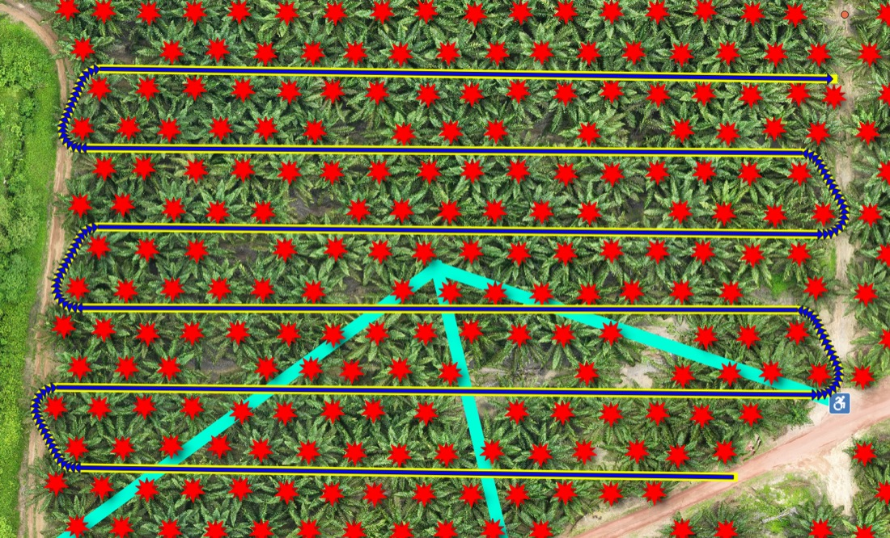
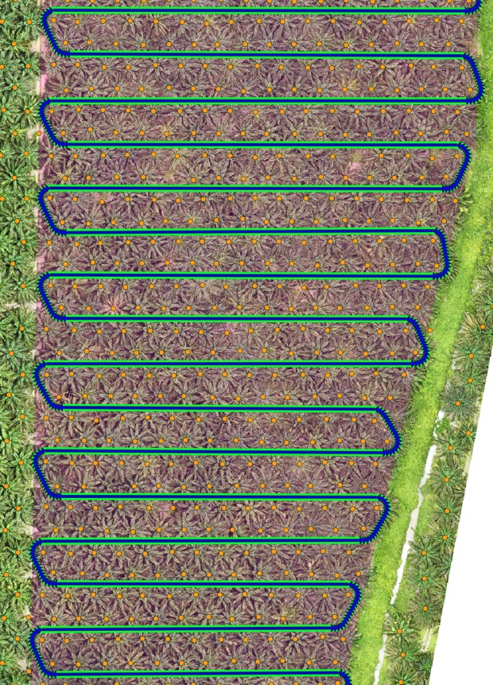
Generated field routes: YOLOv8 finds the trees, the planner threads a serpentine path through the rows.
01
Cloud analytics pipeline
Containerized microservices on Azure Kubernetes that estimate crop height, LAI, width, stand count and point clouds, fed by a MongoDB change stream and a Redis job queue across AWS, Azure and GCP storage.
02
LiDAR crop-height algorithm
Polar-to-Cartesian conversion, left and right contour generation and percentile-based averaging, plus the internal Python libraries for odometry, camera projection and point clouds.
03
Autonomous path generator
Serpentine field routes built from YOLOv8-detected tree centres and field boundaries, with row clustering and curvature-constrained Bézier U-turns, exported as GeoJSON.
04
Web teleoperation
Real-time video and autonomous waypoint navigation over WebSockets and AWS Kinesis Video Streams, integrated with ROS2 Humble and shipped in Docker.
05
Data-review web app
SvelteKit on Firebase with a MongoDB Realm backend and Azure identity, used for plot alignment, video and LiDAR review, and launching pipelines.
06
LoRa firmware and operator apps
C++ LoRa firmware for Adafruit Feather M0 and custom SAMD21 modules on FreeRTOS, plus the Android apps operators use to drive the robots in the field.
Debugged a React Native telemetry app on Firebase, and built a YOLOv8 service that detects and counts Mediterranean fruit flies in trap imagery.
Things I build on my own time.
ShroomVerse · 2025 to present
An idle strategy game for iOS and Android.
Planets rebuild from a single seed and shatter along Voronoi cells. The economy keeps running while you are away, replayed step by step so it can never drift from the live rules.
86k lines of C# on Unity 6 URP
Five custom HLSL shaders
69 unit tests on asynchronous combat
About 30 UI panels, all built in code
Eden · 2024 to present
A smart garden sensor.
ESP32 firmware for BLE setup, camera capture and moisture sensing, with a SwiftUI companion app on Supabase.
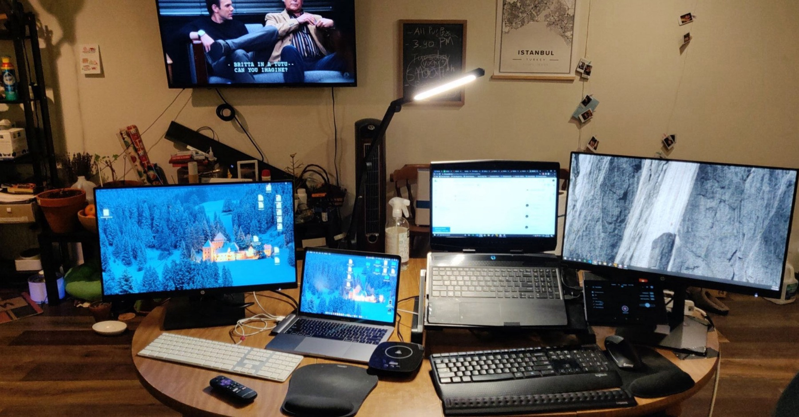
Where the side projects happen.
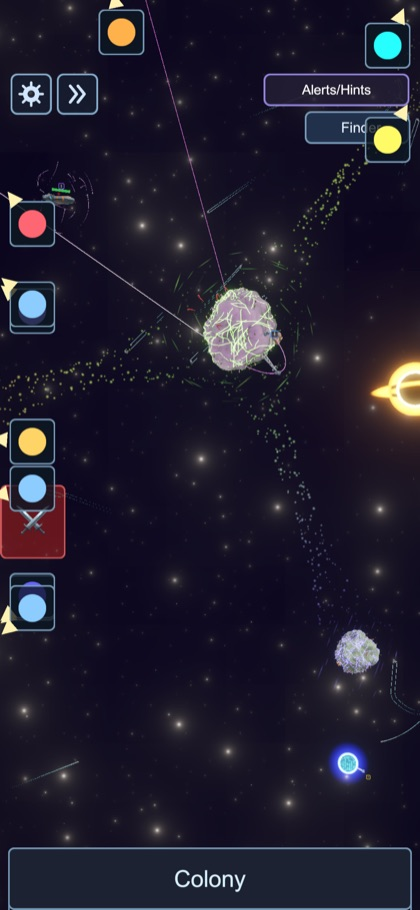
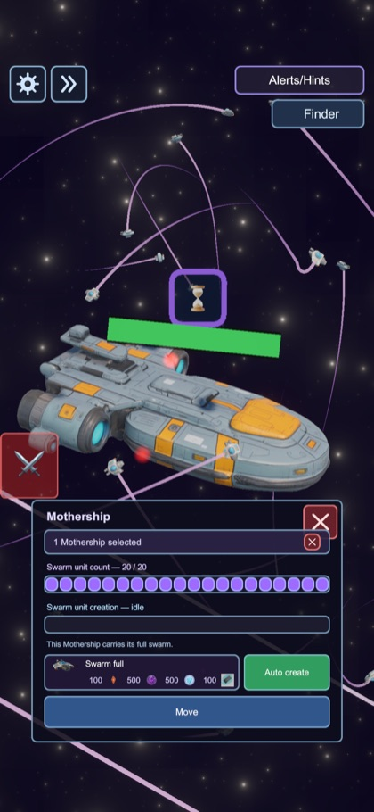
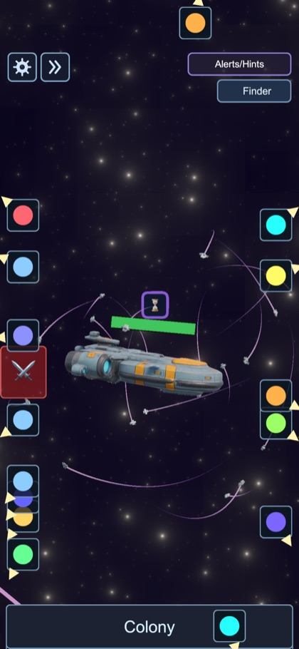
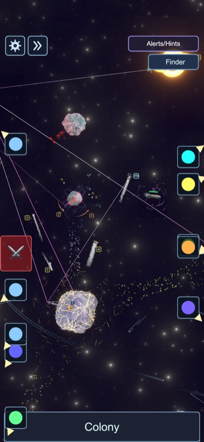
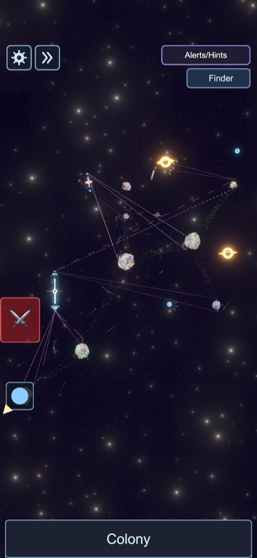
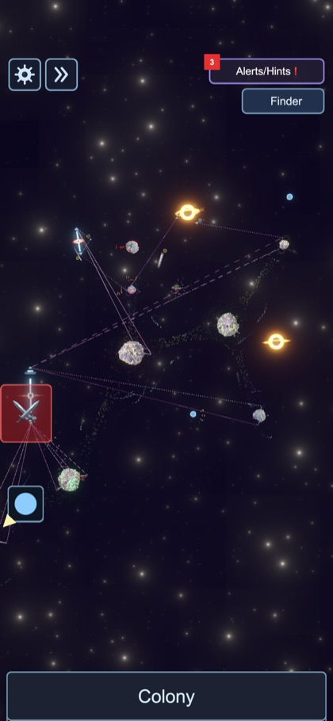
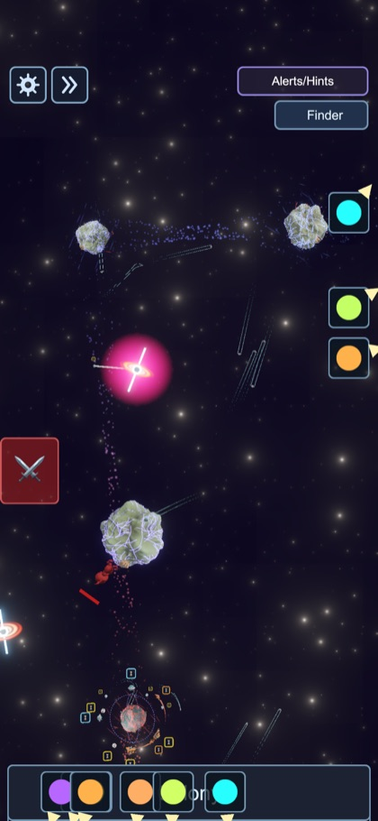
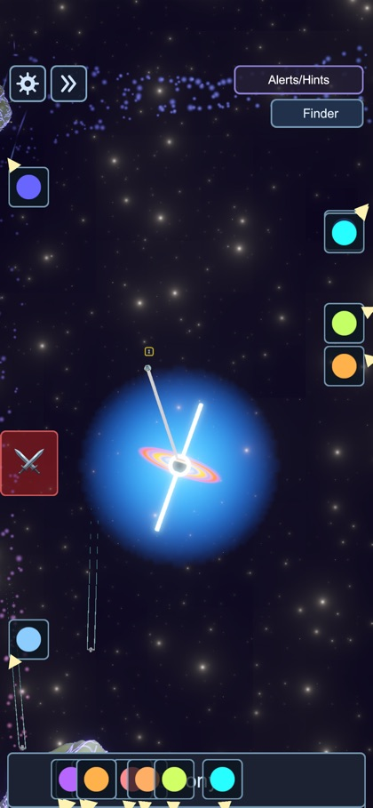
ShroomVerse on iPhone. Planets grow from a single seed, and every panel is built in code.
Selected projects
Robot Data WebappJWT-authenticated dashboard charting robot field metrics. Node, React, MongoDB.
Companion Logging WebLocal Dockerized site with AES-256-GCM credential encryption over robot collections.
John Deere Tango automationSenior capstone: an Android controller for an automated mower, presented to John Deere engineers.